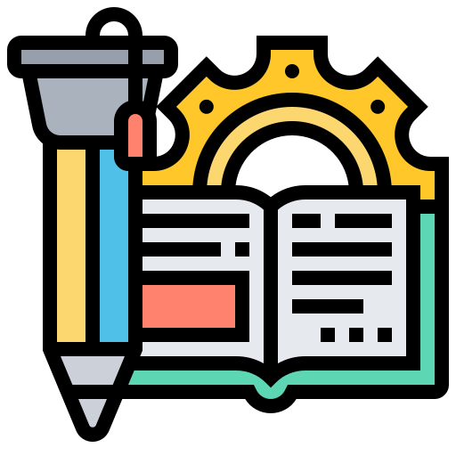
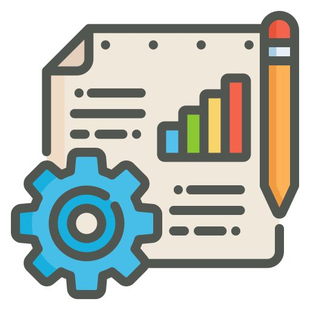

Máster en
Desarrollo Web Full Stack
Nuestro Máster en Desarrollo Web Full Stack está diseñado para proporcionarte las habilidades necesarias para convertirte en un desarrollador web completo. Aprenderás tanto el desarrollo front-end como back-end, utilizando las tecnologías más demandadas en la industria.
Quiero inscribirme yaCon el Máster online conseguirás:
-
Encontrar trabajo
Tendrás acceso a nuestra bolsa de empleo exclusiva para estudiantes y egresados, con oportunidades en empresas tecnológicas líderes, que confían en la calidad de nuestra formación y prefieren contratar a nuestros graduados. Empleo garantizado por contrato.
-
Disponer del programa más completo del mercado con garantía de estudio
El que incluye mayor número de tecnologías y herramientas actuales. Si encuentras un Máster más completo, te devolvemos el dinero.
-

Aprender desde cero
No necesitas conocimientos previos en programación. Comenzamos desde lo más básico y avanzamos hasta convertirte en un desarrollador web full stack competente.
-
Aprender con un sistema de enseñanza enfocado al mundo laboral
Nuestro enfoque práctico y orientado a proyectos te prepara para enfrentar los desafíos reales del desarrollo web en el entorno laboral.
Metodología de estudio
-
Avanza en comunidad
Nuestro programa cuenta con tutores a los que podrás consultar tus dudas y compañeros con los que compartir tu aprendizaje. No estarás solo en ningún momento. Podrás solicitar sesiones de mentoría personalizadas para resolver tus dudas específicas y recibir orientación adicional. Nunca estarás solo en tu proceso de aprendizaje.
-
Aprende a tu ritmo
Nuestro máster está diseñado para adaptarse a tu horario y ritmo de aprendizaje. Podrás acceder a los materiales y recursos en cualquier momento, permitiéndote avanzar según tu disponibilidad. Además, tendrás acceso a los contenidos del máster de por vida, para que puedas repasar y actualizar tus conocimientos cuando lo necesites.
-
Tutores y sesiones en vivo
Nuestro equipo de tutores expertos estará disponible para guiarte a lo largo de tu formación. Además, organizamos sesiones en vivo donde podrás interactuar con profesionales del sector y resolver tus dudas en tiempo real.
-

Proyectos prácticos
A lo largo del máster, trabajarás en proyectos reales que te permitirán aplicar los conocimientos adquiridos y desarrollar habilidades prácticas esenciales para el mercado laboral. Construirás un portafolio sólido que demostrará tus capacidades a futuros empleadores.
¿Listo para dominar el futuro de la tecnología?
Inscribete hoy mismo en el Máster en Desarrollo Web Full Stack y dale un giro radical a tu carrera profesional.
Comienza ya la inscripción